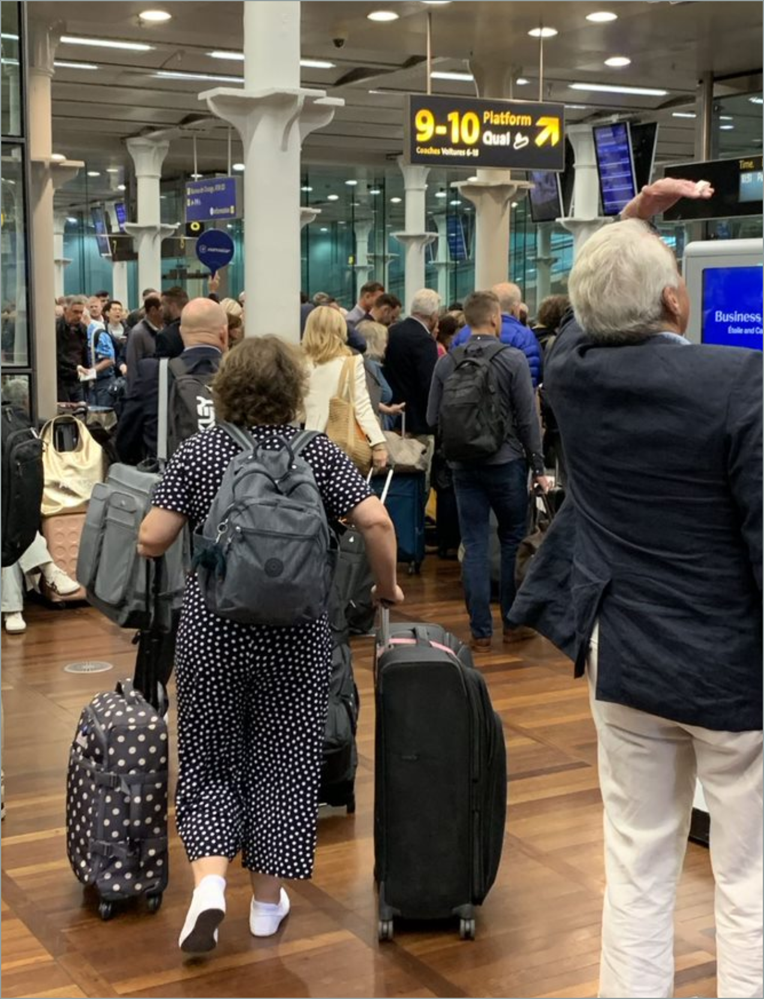

[verbatim] Wednesday, 18th of September. Today we're going on a much more leisurely approach. Down to the Van Gogh Museum and to have lunch at the cafe. At the restaurant. Near the concert cabal. There's a substantial park there to walk through, which we'll do as well. Had a good breakfast again this morning. Probably leave at about 11/30 12:00-ish, I suppose by taxi. Taxi seems to be very essential. Trams. Lots of trams, but we don't know the way around yet, so we're just going to have to have to bite the bullet. Yesterday was probably over heavy. Spent quite a long time at the right museum. Fantastic place. Solve my. Wellington portrait Problem Solve My Napoleon portrait problem. Saw a couple of other pictures that I really want. They have a thing called the Rice Museum studio. Which permits you to download very high quality digital text images. For free, amazingly. Must still experiment with this when we get back to London. Then we had a very good lunch at the right museum cafe. Were quite exceptional, in fact. And then an absolutely wonderful canal boat cruise around the city. I think by then we was taught indeed a bit tired. Had a rest in the park. Then got another taxi to the restaurant. Which we booked. Not particularly spectacular but fairly spectacular price. Got back at the hotel about 9:00, I guess. Slept like a complete log. Still loving Amsterdam architecture. Exquisite people seem to be very nice. Food, relatively pedestrian, but what the hell? The water scenery is excellent. There's obviously lots to do. I probably didn't do enough research on Amsterdam, but I think I'll Van Gogh today, followed by the concert cabal. We'll probably see us. Happily enough, tomorrow train. End of recording.
